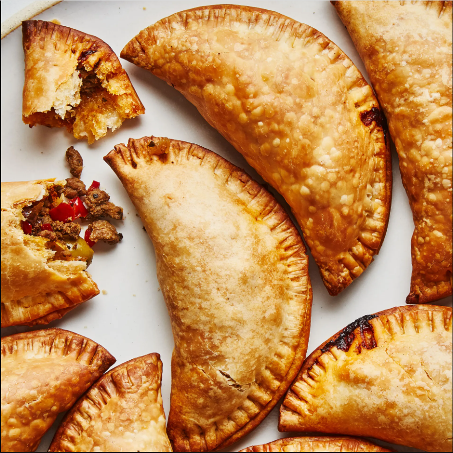

Empanada

There are as many variations of empanadas as there are cooks in Argentina
(though they’re popular throughout Latin America and Spain too).
This version was developed by BA’s former test kitchen manager Gaby Melian,
who is from Buenos Aires and was taught as a little girl by her mother and grandmother
how to make them. She prefers these baked, not fried—the store-bought empanada dough
(a variety of puff pastry) ensures you’ll still get all of those flaky layers.
(If you prefer fried ones, try Gaby’s Ham, Cheese, and Onion Empanadas.)
This homemade empanada recipe has “saved me so many times,” writes Gaby in her step-by-step guide.
“Birthday parties? Empanadas. Somebody’s coming over? Empanadas.”
Keeping some in the freezer certainly helps.
They can hang out there for three months—just be sure to freeze them on a sheet tray first
so they don’t stick together.
Ingredients
- 3 Tbsp. extra-virgin olive oil, divided
- 2 lb. ground beef (20% fat)
- 2 medium onions, chopped
- 2 small red bell peppers, seeded, chopped, Kosher salt, freshly ground pepper
- 3 Tbsp. ground cumin
- 2 Tbsp. sweet paprika
- 1 Tbsp. dried oregano
- ¼ tsp. cayenne pepper
- 1½ cups low-sodium chicken stock or broth
- 2 tsp. sugar
- ½ cup raisins
- 3 packages (12 each) Puff Pastry Dough for Turnovers/Empanadas (preferably Goya)
- ½ cup pitted green olives (Picholine or Spanish), rinsed well, cut in half lengthwise, divided
Steps to follow
- Heat 2 Tbsp. oil in a large pot over high. Cook 2 lb. ground beef, breaking up with a spoon, until browned but not completely cooked through, 6–8 minutes. Transfer to a medium bowl with a slotted spoon, leaving as much fat in pan as possible.
- Reduce heat to medium and cook 2 medium onions, chopped, 2 small red bell peppers, seeded, chopped, and remaining 1 Tbsp. oil, stirring, until tender but not browned, 6–8 minutes; season with salt and black pepper. Add 3 Tbsp. ground cumin, 2 Tbsp. sweet paprika, 1 Tbsp. dried oregano, and ¼ tsp. cayenne pepper and cook, stirring, until fragrant, about 1 minute. Add 1½ cups low-sodium chicken stock or broth and reserved beef along with any accumulated juices to pot. Stir in 2 tsp. sugar, 4 tsp. salt, and ¼ tsp. black pepper. Bring to a simmer and cook, stirring and scraping up any brown bits, until most of the liquid is evaporated, 15–20 minutes; taste and season with salt and black pepper, if needed. Stir in ½ cup raisins. Transfer to a medium bowl, cover, and chill at least 3 hours.
Do Ahead: Beef filling can be made 3 days ahead. Keep chilled.
- Preheat oven to 375°. Let 3 packages Puff Pastry Dough for Empanadas sit at room temperature 15 minutes to temper. Remove 6 rounds from package, keeping plastic divider underneath, and arrange on a work surface. Place 2 Tbsp. filling in the center of each round.
- Top with 2 olive halves. Brush water around half of outer edge of each round.
- Using plastic divider to help you, fold round over filling and pinch edges to seal.
- Using a fork, crimp edges. Remove plastic and transfer empanada to a parchment-lined sheet tray, spacing 1" apart. Repeat with remaining rounds (you’ll get about 12 empanadas on each tray).
- Bake empanadas, rotating tray halfway through, until golden brown and slightly darker around the edges, 25–35 minutes.
Return to main page